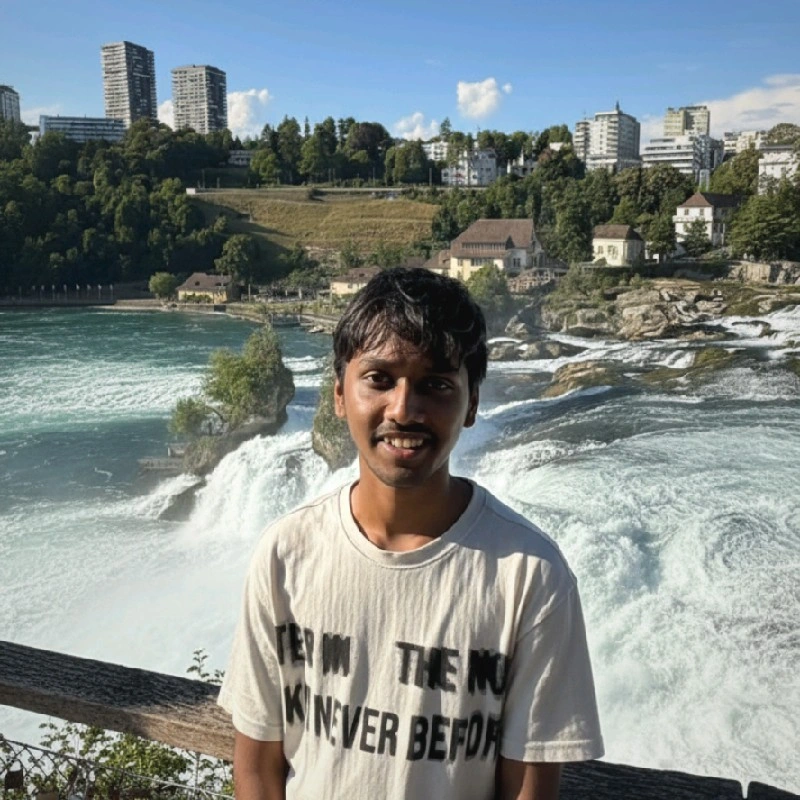
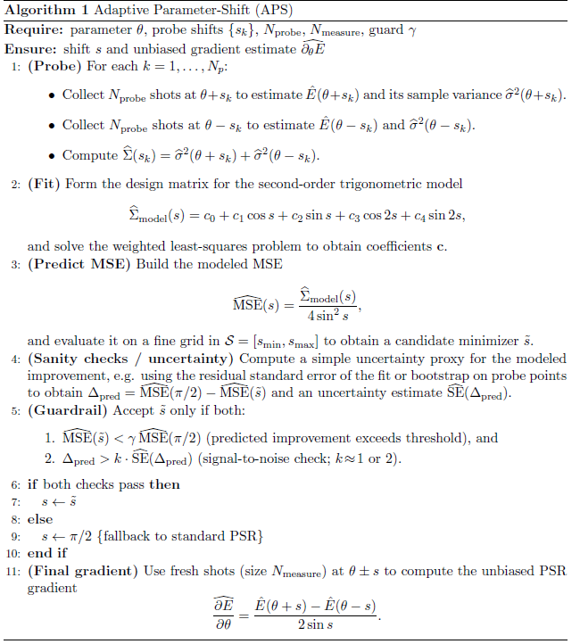
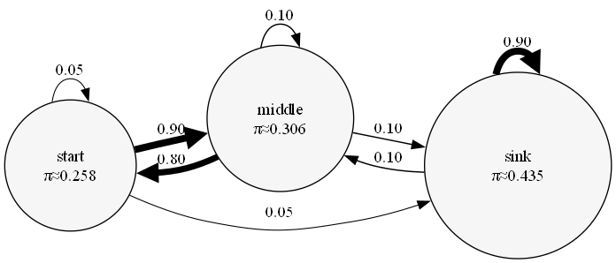
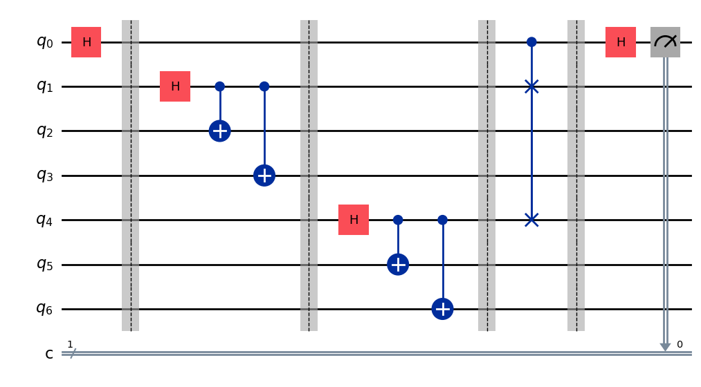

|  |
|
|
Hello! I'm Akash Sudarsana Narasimhan (aka S Akash), a final year undergrad at the Indian Institute of Technology (IIT), Patna, pursuing a Bachelor of Technology in Electrical Engineering. My research interests revolve around sequential decision-making problems, especially multi-armed bandits and reinforcement learning. I spent two wonderful summers interning at IIIT Hyderabad and IRIT, Toulouse. During these stints, I was fortunate to be mentored by Dr. Tejas Bodas and Dr. Urtzi Ayesta respectively. My research in Toulouse was generously supported by the Charpak Excellence scholarship. We explored sample efficiency of Q-learning variants, learning algorithms for Markovian bandits and the time-varying holding cost problem in M/M/1 queues during these internships. Feel free to drop me an e-mail if you want to chat with me! |
|
Dec 2025 |
Excited to be back in Hyderabad for the ACM Winter School on AI & Finance. (Thanks to AlphaGrep x IIITH lab) |
|
Oct 2025 |
Our Team Apex secured 24th position (out of 80,000+) in the Amazon ML Challenge '25. |
|
June 2025 |
Attended the Microsoft Research Academic Summit (gained a fresh Outlook!). |
|
May 2025 |
Started my summer internship at IRIT Toulouse. |
|
Mar 2025 |
Selected for the France Excellence Charpak Scholarship (among 35 Indian undergrads). |
|
Dec 2024 |
Spent a week at IIT Bombay leading the team on the BharatForge challenge for Inter IIT Tech Meet 13.0. |
|
Dec 2024 |
Selected for the CS Theory Winter Residency at IIT Delhi (cohort of 30 students nationwide). |
|
May 2024 |
Started my summer internship at IIIT Hyderabad. |
|
Dec 2023 |
Represented Team IIT Patna in the Devrev problem statement at Inter IIT Tech Meet 12.0 hosted by IIT Madras. |
|
Aug 2023 |
Stepped up as Sophomore Coordinator for the campus Machine Learning society. |
|
Nov 2022 |
Joined IIT Patna for my undergrad studies. |
|
|
May '25 - July '25 Advisor: Dr. Urtzi Ayesta Interned with the RMESS team, focusing on the development and analysis of Whittle index-based scheduling algorithms. |
|
|
May '24 - July '24 Advisor: Dr. Tejas Bodas Interned with the Computer Systems Group, developing RL algorithms for Markovian bandits and a hybrid algorithm to improve the sample efficiency of Q-learning. |
|

|
Oct '25 - Present Advisor: Prof. Jawar Singh Developing a gradient estimation framework to overcome the limitations of fixed-shift rules on noisy quantum hardware. Modeling the shot-noise landscape via Fourier series to test an adaptive strategy for selecting shift angles. |

|
Implemented the Fair Multi-Objective DQN (FMDQ) algorithm substituting standard linear scalarization with a Generalized Gini Welfare function. Designed the agent to be fully compatible with the |
|

|
Developed a Python tool that flattens an MDP and policy into its induced Markov chain. Analyzes structural properties (communicating classes, ergodicity) and generates visualizations like policy graphs and heatmaps. |

|
Formulated product price prediction as a text regression problem. Fine-tuned a |
|

|
Advisor: Prof. Jawar Singh Formulated quantum entanglement detection as a multi-armed bandit problem. Implemented Top-Two Thompson Sampling to select measurements efficiently, identifying entangled states with far fewer samples than traditional tomography. |
Website adapted from Jon Barron's template. It has further been modified by Harshit Dhankar and Amish Mittal. Feel free to clone the repo; please credit the original author.